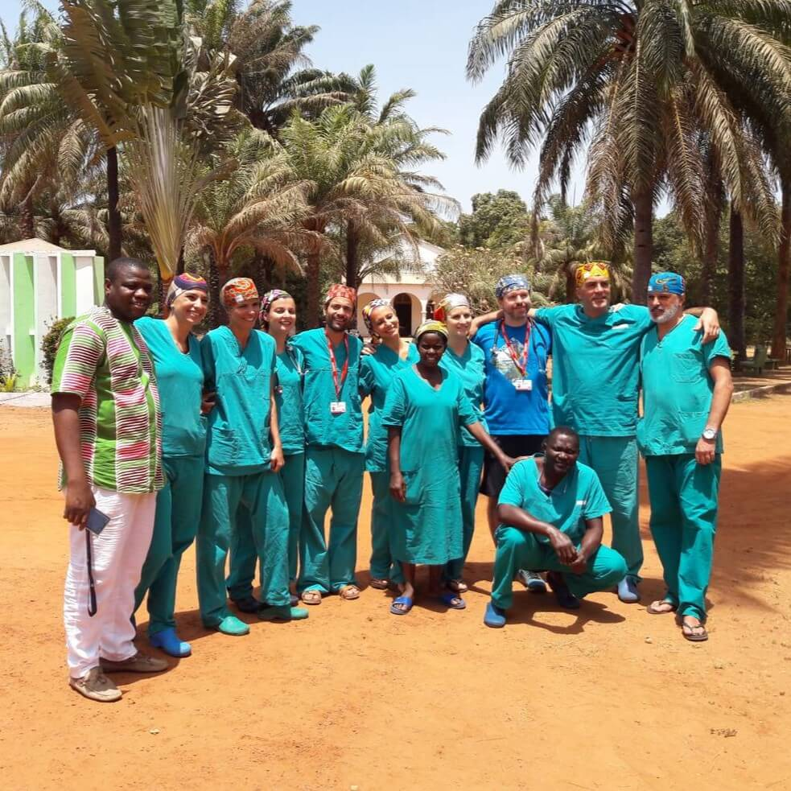
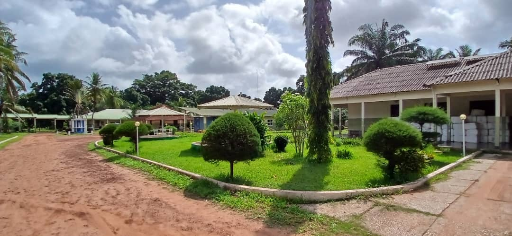
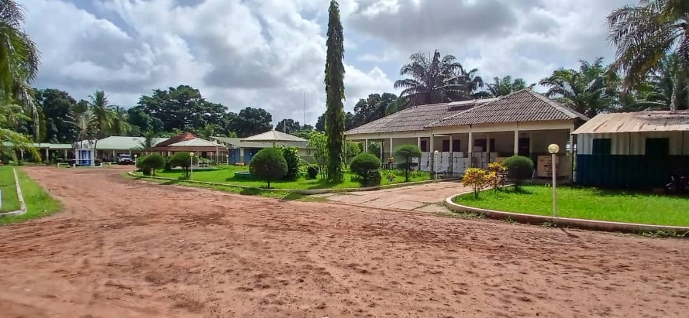
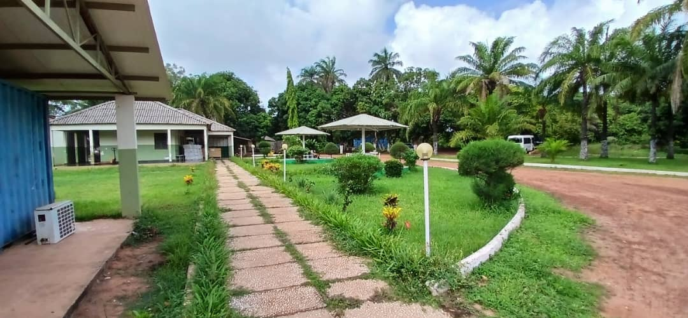
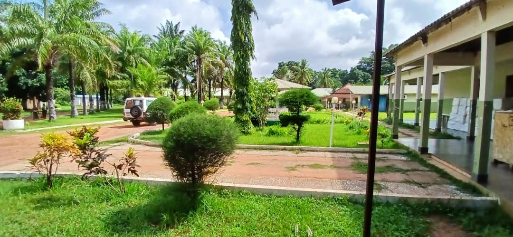
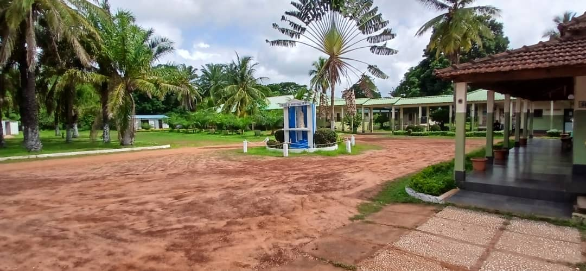
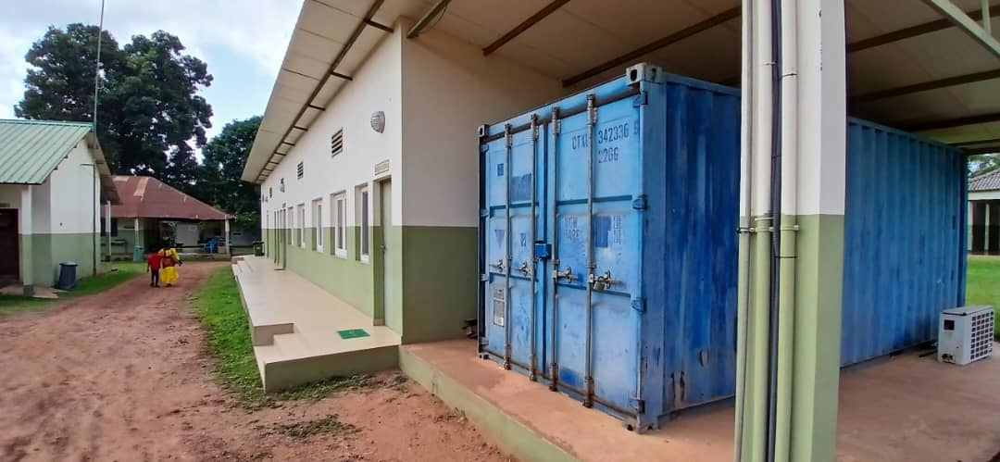
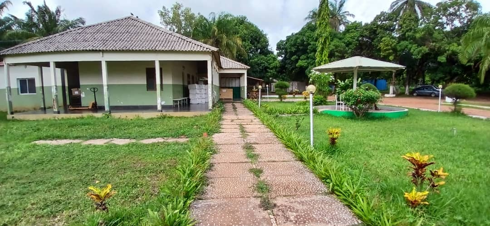

Missão de Cirurgiões Internacionais em Cumura
Recebemos uma equipe de cirurgiões voluntários que realizarão cirurgias reparadoras durante todo o mês de agosto.
O Hospital do Mal de Hansen de Cumura é uma instituição de referência no tratamento da hanseníase (mal de Hansen) na região de Biombo, Guiné-Bissau. Fundado durante o período colonial, o hospital tornou-se um símbolo de acolhimento e cuidado para centenas de pacientes ao longo das décadas.
Localizado na zona rural de Cumura, a cerca de 30 km de Bissau, o hospital oferece tratamento especializado, reabilitação física e apoio psicossocial para pessoas afetadas pela hanseníase, muitas das quais enfrentam estigma e exclusão social.
Contamos com uma equipe multidisciplinar dedicada, incluindo médicos, enfermeiros, fisioterapeutas e assistentes sociais, todos comprometidos com a missão de devolver dignidade e qualidade de vida aos nossos pacientes.
Cumura, Região de Biombo, Guiné-Bissau





Oferecemos assistência completa e humanizada para pacientes com hanseníase e suas famílias.
Informação clara ajuda a diagnosticar cedo, tratar e acabar com o estigma.
A hanseníase (mal de Hansen) é uma doença infecciosa causada pela bactéria Mycobacterium leprae. Afeta principalmente a pele, os nervos e, por vezes, os olhos e as mucosas. Tem cura — e o tratamento é gratuito.
Quanto mais cedo for o diagnóstico, menor o risco de incapacidades e de transmissão na comunidade.
Tem manchas ou sintomas? Procure avaliação médica o mais cedo possível.
Agendar consulta Falar no WhatsAppConheça relatos de pacientes que encontraram acolhimento e tratamento no Hospital de Cumura.
"Cheguei ao hospital sem esperança. Hoje, depois do tratamento, posso trabalhar novamente e cuidar da minha família. Sou grato a toda a equipe."
— Mamadu Sissé
"O Hospital de Cumura me acolheu quando fui rejeitada pela minha própria comunidade. Aqui encontrei tratamento, respeito e uma nova família."
— Fátima Baldé
"Meu filho foi diagnosticado cedo graças ao trabalho de conscientização do hospital. Hoje ele está curado e estuda normalmente. Que bênção!"
— Maria da Silva
Missões, campanhas e apoios do Hospital de Cumura.

Recebemos uma equipe de cirurgiões voluntários que realizarão cirurgias reparadoras durante todo o mês de agosto.

Equipe móvel visitou 5 aldeias em Biombo para educar sobre os sinais da hanseníase.

Parceria com a OMS garante PQT para o tratamento gratuito durante mais um ano.
Agende consulta, peça informações ou saiba como apoiar o hospital.
Cumura, Região de Biombo
Guiné-Bissau (cerca de 30 km de Bissau)
Segunda a Sexta · 08h00 – 16h00
Substitua o telefone e o e-mail pelos contactos oficiais do hospital.